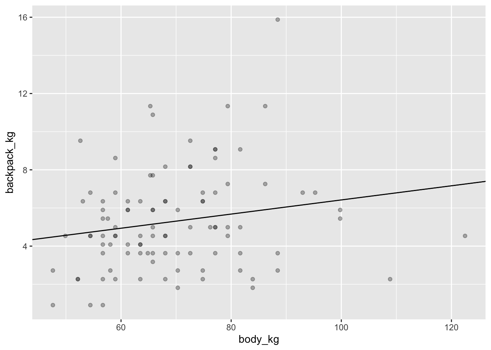
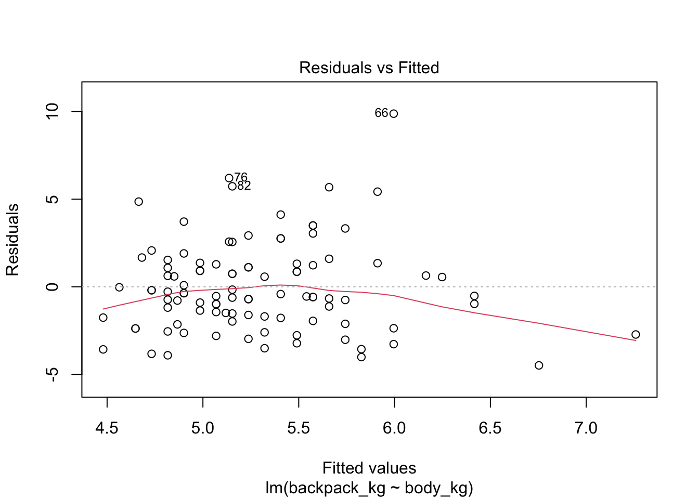
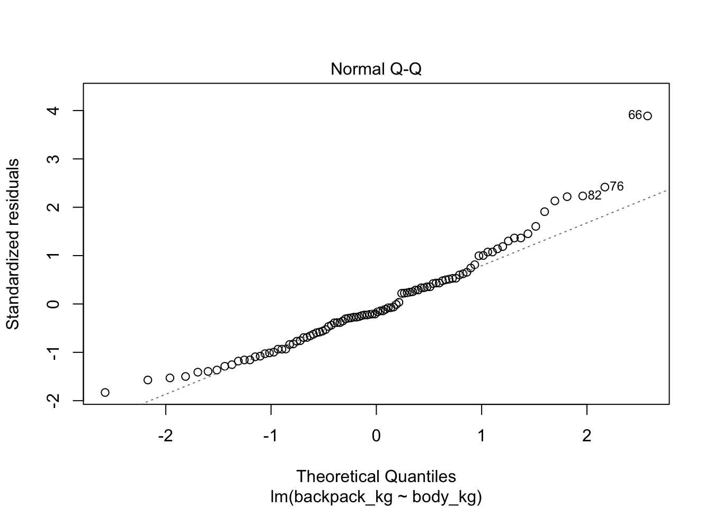
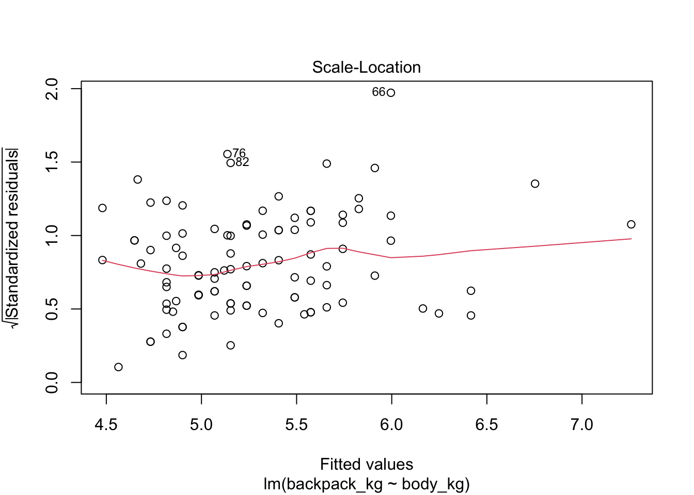
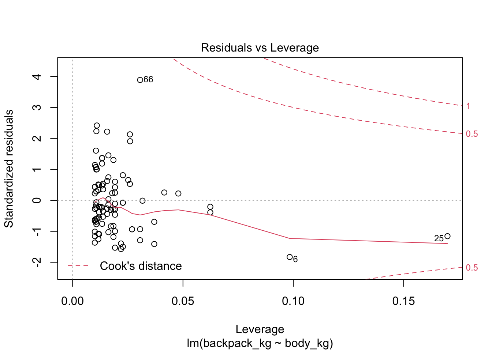
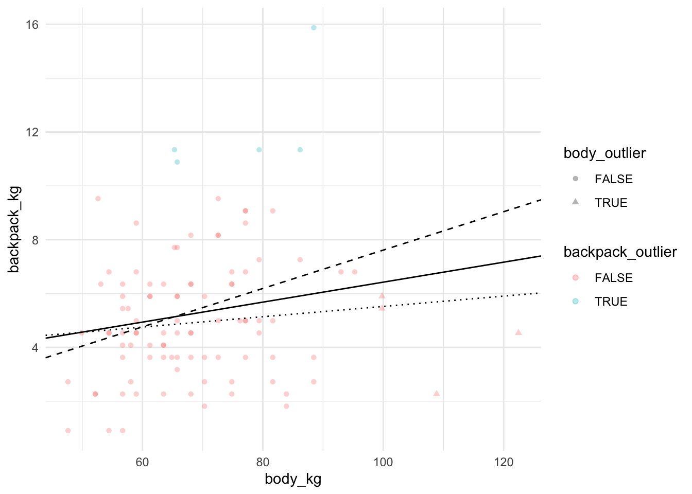

17 Линейная регрессия
Вы уже умеете считать коэффициент корреляции Пирсона:
cor.test(back$backpack_kg, back$body_kg)##
## Pearson's product-moment correlation
##
## data: back$backpack_kg and back$body_kg
## t = 1.9088, df = 98, p-value = 0.05921
## alternative hypothesis: true correlation is not equal to 0
## 95 percent confidence interval:
## -0.007360697 0.371918344
## sample estimates:
## cor
## 0.1893312Простая линейная регрессия - это примерно то же самое. В синтаксисе линейной регрессии уже не обойтись без формул, это такой специальный тип данных в R:
class(y ~ x)## [1] "formula"Если видите эту волнистую линию - тильду (~), это значит, что перед вами формула. Мы уже сталкивались с формулами ранее, они иногда используются для задания отношений между переменными, например, для определения фасеток на графике (@ref(gg_base)).
Давайте исследуем зависимость размера рюкзака от массы тела. В простой линейной регрессии, в отличие от корреляции, есть направленность: одна переменная является как бы независимой переменной или предиктором, другая - как бы объясняемой переменной (outcome). В формуле предикторы находятся справа от тильды, а объясняемая переменная - слева.
Я специально написал "как бы": если одна переменная предиктор, а другая объясняется этим предиктором, то кажется, что они должны быть обязательно связаны причинно-следственной связью. Это не так: обозначения условны, более того, вы можете поменять переменные местами и ничего не изменится! Короче говоря, линейная регрессия не дает никакой магической каузальной силы исследуемым переменным.
17.1 Функция lm()
Давайте посчитаем линейную регрессию функцией lm().
model <- lm(backpack_kg ~ body_kg, data = back)
model##
## Call:
## lm(formula = backpack_kg ~ body_kg, data = back)
##
## Coefficients:
## (Intercept) body_kg
## 2.71125 0.03713print(model) или просто model выводит коэфициенты линейной регрессии - это коэффициенты прямой, которая лучше всего подогнанна к данным. Как измеряется качество этой подгонки? В расстоянии точек исходных точек до прямой. По идее, расстояние до прямой нужно было бы считать просто по модулю. И так делают, хоть и очень редко. Обычно в линейной регрессии используются квадратичные расстояния точек до прямой для оценки расстояния (метод наименьших квадратов - ordinary least squares). Это дает кучу клевых математических свойств, например, возможность легко аналитически найти коэффициенты прямой линейной регрессии.
Давайте теперь нарисуем регрессионную прямую поверх диаграммы рассеяния:
ggplot(data = back,aes(x = body_kg, y = backpack_kg))+
geom_point(alpha = 0.3)+
geom_abline(slope = model$coefficients[2], intercept = model$coefficients[1])
Функция predict() позволяет скормить модели новые данные и получить предсказания для новых значений предикторов. Попробуем поиграть с этим немного. Допустим, предскажем вес рюкзака для студента весом в 100 кг:
predict(model, newdata = data.frame(body_kg = 100))## 1
## 6.424229Мы можем даже попробовать какие-нибудь экстремальные значения для предикторов. Например, сколько будет весить рюкзак студента весом 1000 кг?
predict(model, newdata = data.frame(body_kg = 1000))## 1
## 39.841Очевидно, что в этом не очень много смысла: студент весом 1000 кг не сможет ходить на занятия, поэтому и про вес рюкзака как-то не имеет смысл спрашивать. Это проблема экстрополяции: линейная регрессия позволяет более-менее достоверно предсказывать значения внутри диапазона значений, на которых была построена модель. Еще один "странный" пример - студент весом 0 кг.
predict(model, newdata = data.frame(body_kg = 0))## 1
## 2.711255Здесь бессмысленность происходящего еще очевиднее. Конечно, вес студента не может быть равен нулю, иначе это не студент вовсе. Однако это позволяет понять, что такое intercept модели - это значение зависимой переменой в случае, если предиктор равен нулю. А коэффициент предиктора означает, насколько килограммов увеличивается вес рюкзака при увеличении веса студента на 1 кг: на 0.0371297. Не очень много!
17.2 Интерпретация вывода линейной регрессии
Гораздо более подробные результаты мы получим, если применим уже известную нам generic функцию summary() на нашу модель.
summary(model)##
## Call:
## lm(formula = backpack_kg ~ body_kg, data = back)
##
## Residuals:
## Min 1Q Median 3Q Max
## -4.4853 -1.7629 -0.4681 1.2893 9.8803
##
## Coefficients:
## Estimate Std. Error t value Pr(>|t|)
## (Intercept) 2.71125 1.37483 1.972 0.0514 .
## body_kg 0.03713 0.01945 1.909 0.0592 .
## ---
## Signif. codes: 0 '***' 0.001 '**' 0.01 '*' 0.05 '.' 0.1 ' ' 1
##
## Residual standard error: 2.581 on 98 degrees of freedom
## Multiple R-squared: 0.03585, Adjusted R-squared: 0.02601
## F-statistic: 3.644 on 1 and 98 DF, p-value: 0.05921Теперь мы понимаем, что это за коэффициенты. Однако это всего лишь их оценка. Это значит, что мы допускаем, что в реальности есть некие настоящие коэффициенты линейной регрессии, а каждый раз собирая новые данные, они будут посчитаны как немного разные. Короче говоря, эти коэффициенты - те же статистики, со своим выборочным распределением и стандартными ошибками. На основе чего и высчитывается p-value для каждого коэффициента - вероятность получить такой и более отклоняющийся от нуля коэффициент при верности нулевой гипотезы - независимости зависимой переменной от предиктора.
Кроме p-value, у линейной регрессии есть \(R^2\) - доля объясненной дисперсии. Как ее посчитать? Для начала давайте сохраним как отдельные колонки ошибки (необъясненную часть модели) и предсказанные значения (они означают объясненную часть модели). Можно убедиться, что сумма предсказанных значений и ошибок будет равна зависимой переменной.
head(model$residuals)## 1 2 3 4 5 6
## -0.7341441 -2.3666602 -0.1963429 -2.6001743 -2.1140337 -4.4853169back$residuals <- residuals(model)
back$fitted <- fitted(model)
back %>%
transmute(backpack_kg - (fitted + residuals))Соответственно, вся сумма объясненной дисперсии разделяется на объясненую и необъясненную. Полная дисперсия (total sum of squares = TSS) может быть посчитана как сумма квадратов разниц со средним. Необъясненная дисперсия - это сумма квадратов ошибок - residual sum of squares (RSS).
rss <- sum(back$residuals^2)
rss## [1] 652.7272tss <- sum((back$backpack_kg - mean(back$backpack_kg))^2)
tss## [1] 676.9951- rss/tss## [1] 0.03584628Это очень мало, мы объяснили всего 3.5846285% дисперсии. Собственно, и p-value больше, чем 0.05.
summary(model)##
## Call:
## lm(formula = backpack_kg ~ body_kg, data = back)
##
## Residuals:
## Min 1Q Median 3Q Max
## -4.4853 -1.7629 -0.4681 1.2893 9.8803
##
## Coefficients:
## Estimate Std. Error t value Pr(>|t|)
## (Intercept) 2.71125 1.37483 1.972 0.0514 .
## body_kg 0.03713 0.01945 1.909 0.0592 .
## ---
## Signif. codes: 0 '***' 0.001 '**' 0.01 '*' 0.05 '.' 0.1 ' ' 1
##
## Residual standard error: 2.581 on 98 degrees of freedom
## Multiple R-squared: 0.03585, Adjusted R-squared: 0.02601
## F-statistic: 3.644 on 1 and 98 DF, p-value: 0.05921При этом p-value тот же, что и при коэффициента корреляции Пирсона. Это не случайно: \(R^2\) - это квадрат коэффициента корреляции Пирсона, если речь идет только об одном предикторе. Давайте это проверим:
cor.test(back$body_kg, back$backpack_kg)$estimate^2## cor
## 0.0358462817.3 Допущения линейной регрессии
Как и в случае с другими параметрическими методами, линейная регрессия имеет определенные допущения относительно используемых данных. Если они не соблюдаются, то все наши расчеты уровня значимости могут некорректными.
Очень важно ставить вопрос о том, насколько результаты будут некорректными. Как сильно нарушения допущений будет влиять на модель? Ответ на этот вопрос может быть контринтуитивен. Например, достаточно большие отклонения от нормальности нам обычно не страшны при условии того, что выборка достаточно большая.
Допущения линейной регрессии связаны с ошибками: они должны быть нормально распределены, а разброс ошибок должен не уменьшаться и не увеличиваться в зависимости от предсказанных значений. Это то, что называется гомоскедастичностью или гомогенностью (когда все хорошо) и гетероскедастичностью или гетерогенностью (когда все плохо).
Если мы применим функцию plot(), то получим 4 скаттерплота:
Зависимость ошибок от предсказанных значений. На что здесь смотреть? На симметричность относительно нижней и верхней части графика, на то, что разброс примерно одинаковый слева и справа.
Q-Q plot. Здесь все довольно просто: если ошибки являются выборкой из нормального распределения, то они выстраиваются в прямую линию. Если это мало похоже на прямую линию, то имеет место отклонение от нормальности.
Scale-Location plot. Этот график очень похож на график 1, только по оси у используются квадратные корни модуля ошибки. Еще один способ исследовать гетеро(гомо)скедастичность и находить выбросы.
Residuals-Leverage plot. Здесь по оси х - расстояние Кука, а по оси у - стандартизированный размер выбросов. Расстояние Кука показывает high-leverage points - точки, которые имеют экстремальные предсказанные значения, то есть очень большие или очень маленькие значения по предикторам. Для линейной регрессии такие значения имеют большее значение, чем экстремальные точки по предсказываемой переменной. Особенно сильное влияние имеют точки, которые имеют экстремальные значения и по предикторам, и по предсказываемой переменной. Одна такая точка может поменять направление регрессионной прямой! Расстояние Кука отражает уровень leverage, а стандартизированные ошибки отражают экстремальные значения по у (вернее, экстремальные отклонения от предсказанных значений). В этом графике нужно смотреть на точки с правой стороны графика, особенно если они находятся высоко или низко по оси у.
plot(model)
17.4 Влияние выбросов на линейную модель
Давайте теперь попробуем посмотреть, как изменится модель, если выкинуть high leverage points (экстремальные значения по предиктору - body) и что будет, если выкинуть экстремальные значения по у. Обычная линия - регрессионная прямая для модели со всеми точками, штрихованная линия - регрессионная прямая для модели без экстремальных значений по предиктору, пунктирная линия - регрессионная прямая для модели без экстремальных значений по предсказываемой переменной.
is_outlier <- function(x, n = 2, centr = mean, vary = sd) {
(x > centr(x) + n * vary(x)) | (x < centr(x) - n * vary(x))
}
back <- back %>%
mutate(body_outlier = is_outlier(body_kg),
backpack_outlier = is_outlier(backpack_kg))
model_without_outliers_by_x <- back %>%
filter(!body_outlier) %>%
lm(formula = backpack_kg ~ body_kg)
summary(model_without_outliers_by_x)##
## Call:
## lm(formula = backpack_kg ~ body_kg, data = .)
##
## Residuals:
## Min 1Q Median 3Q Max
## -4.6526 -1.7471 -0.3773 1.1699 9.0854
##
## Coefficients:
## Estimate Std. Error t value Pr(>|t|)
## (Intercept) 0.48577 1.65749 0.293 0.77011
## body_kg 0.07128 0.02413 2.953 0.00397 **
## ---
## Signif. codes: 0 '***' 0.001 '**' 0.01 '*' 0.05 '.' 0.1 ' ' 1
##
## Residual standard error: 2.548 on 94 degrees of freedom
## Multiple R-squared: 0.08491, Adjusted R-squared: 0.07517
## F-statistic: 8.722 on 1 and 94 DF, p-value: 0.003971model_without_outliers_by_y <- back %>%
filter(!backpack_outlier) %>%
lm(formula = backpack_kg ~ body_kg)
summary(model_without_outliers_by_y)##
## Call:
## lm(formula = backpack_kg ~ body_kg, data = .)
##
## Residuals:
## Min 1Q Median 3Q Max
## -3.7843 -1.4343 -0.1363 1.4296 4.9122
##
## Coefficients:
## Estimate Std. Error t value Pr(>|t|)
## (Intercept) 3.60560 1.13144 3.187 0.00196 **
## body_kg 0.01915 0.01610 1.190 0.23716
## ---
## Signif. codes: 0 '***' 0.001 '**' 0.01 '*' 0.05 '.' 0.1 ' ' 1
##
## Residual standard error: 2.087 on 93 degrees of freedom
## Multiple R-squared: 0.01499, Adjusted R-squared: 0.004402
## F-statistic: 1.416 on 1 and 93 DF, p-value: 0.2372ggplot(data = back, aes(x = body_kg, y = backpack_kg,
shape = body_outlier, colour = backpack_outlier))+
geom_point(alpha = 0.3)+
geom_abline(intercept = model$coefficients[1], slope = model$coefficients[2])+
geom_abline(intercept= model_without_outliers_by_x$coefficients[1],
slope = model_without_outliers_by_x$coefficients[2], linetype = "dashed")+
geom_abline(intercept= model_without_outliers_by_y$coefficients[1],
slope = model_without_outliers_by_y$coefficients[2], linetype = "dotted")+
theme_minimal()
Таким образом, именно экстремальные значения по предиктору, а не по объяснияемой переменной имеют особенно сильное значение на регрессионную модель.
17.5 Множественная линейная регрессия
В множественной линейной регрессионной регрессии у нас появляется несколько предикторов. Какая модель лучше: где есть много предикторов или где мало предикторов? С одной стороны, чем больше предикторов, тем лучше: каждый новый предиктор может объяснить чуть больше необъясненной дисперсиии. С другой стороны, если эта прибавка маленькая (а она всегда будет не меньше нуля), то, возможно, новый предиктор просто объясняет "случайный шум". В действительности, если у нас будет достаточно много предикторов, то мы сможем объяснить любые данные! Парадоксальным образом такая модель будет давать очень хорошие результаты на той выборке, по которой мы считаем коэффициенты, но делать очень плохие предсказания на новой выборке - это то, что в машинном обучении называют переобучением (overfitting). Идеальная модель будет включать минимум предикторов, которые лучше всего объясненяют исследуемую переменную. Это что-то вроде бритвы Оккама в статистике.
Поэтому часто используются показатели качества модели, которые "наказывают" модель за большое количество предикторов. Например, adjusted R2:
\[R_{adj} = 1 - (1 - R^2) \frac{n -1}{n - p - 1}\]
Здесь n - это количество наблюдений, p - количество параметров.
Итак, добавим новый предиктор - Units. Это количество кредитов, которые студенты взяли в четверти39. Можно предположить, что чем больше у студента набрано кредитов, тем более тяжелый у нее/него рюкзак. Давайте добавим это как второй предиктор. Для этого нужно просто записать второй предиктор в формуле через плюс.
model_mult <- lm(backpack_kg ~ body_kg + Units, data = back)
summary(model_mult)##
## Call:
## lm(formula = backpack_kg ~ body_kg + Units, data = back)
##
## Residuals:
## Min 1Q Median 3Q Max
## -4.6221 -1.8347 -0.5023 1.2519 10.0623
##
## Coefficients:
## Estimate Std. Error t value Pr(>|t|)
## (Intercept) 0.28481 2.16170 0.132 0.8955
## body_kg 0.04391 0.01990 2.207 0.0297 *
## Units 0.13703 0.09456 1.449 0.1505
## ---
## Signif. codes: 0 '***' 0.001 '**' 0.01 '*' 0.05 '.' 0.1 ' ' 1
##
## Residual standard error: 2.566 on 97 degrees of freedom
## Multiple R-squared: 0.05628, Adjusted R-squared: 0.03682
## F-statistic: 2.892 on 2 and 97 DF, p-value: 0.06025Множественная линейная регрессия имеет еще одно допущение: отсутствие мультиколлинеарности. Это значит, что предикторы не должны коррелировать друг с другом.
Для измерения мультколлинеарности существует variance inflation factor (VIF-фактор). Считается он просто: для предиктора \(i\) считается линейная регрессия, где все остальные предикторы предсказывают предиктор \(i\).
Сам VIF-фактор считается на основе полученного R2 регрессии:
\[VIF_i = \frac{1}{1 - R_i^2}\]
Если Ri2 большой, то и VIFi выходит большим. Это означает, что предиктор сам по себе хорошо объясняется другими предикторами. Какой VIF считать большим? Здесь нет единого мнения, но если он выше 3 и особенно если он выше 10, то с этим нужно что-то делать.
car::vif(model_mult)## body_kg Units
## 1.05858 1.05858В нашем случае это не так. Но если бы VIF был большим для какого-либо предиктора, то можно было бы либо попробовать его выкинуть или же использовать анализ главных компонент (см. ??), о котором пойдет речь в один из следующих дней.
ANOVA от ANalysis Of VAriance, по-русски часто читается как "АНОВА".↩